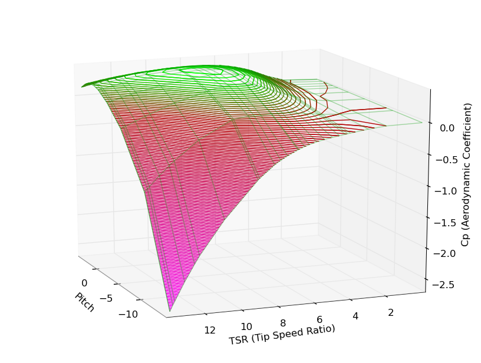
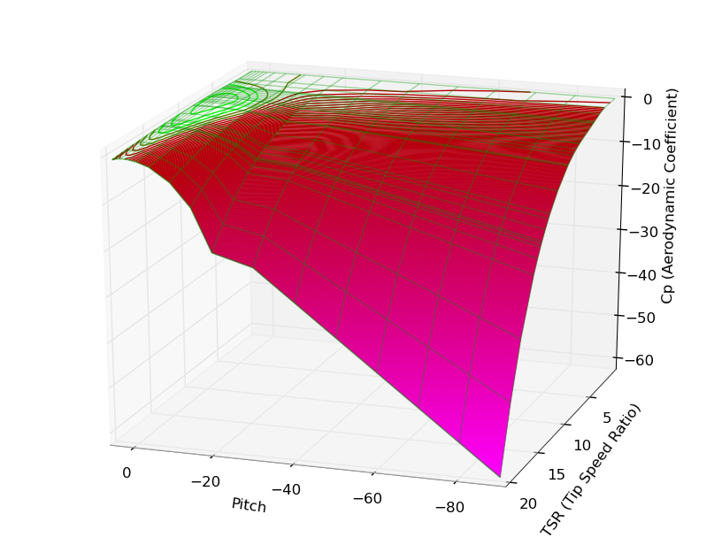

In the Active Stall Wind Turbines, the mechanical Torque created by the Blades is controlled changing the Pitch angle of the Blades, so they enter into the Stalling mode.
One big benefit of this approach is that the required change in the Pitch from maximum Torque (around 0º degrees) to aerodynamic stop is very small. That, in turns, implies a less demanding Pitch mechanism. The drawback is in the dragging force, higher than the case "to-the-feathers", where Pitch angle changes "letting the wind pass by".
Next table shows typical values for the Aerodynamic coefficient as a bi-dimensional function of the Pitch Angle and the Lambda value for a Blade used in Active Stall Wind Turbines.
Lambda is also known as TSR : tip-speed-ratio. The relation between the speed of the tip of the blade respect to the wind.
Lambda (= TRS) = ω * R / V
where ω = rotational speed of the blade (in radians per second)
R = length of the blade (+ Hub radius) (in meters)
V = wind speed (in meters/second)
In this table an Pitch angle of -90º means that the orientation of the blade faces the incoming wind, thus exposing a minimum surface to it.
A position of 0º for pitch means that the blade concave side is facing the wind, exposing the maximum surface to it.
The next figures show views of this value versus Pitch and TSR

